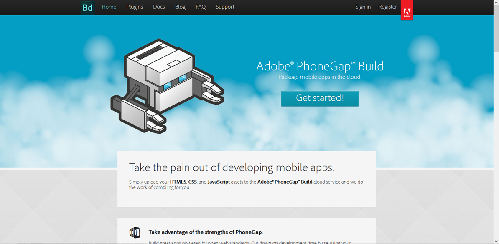
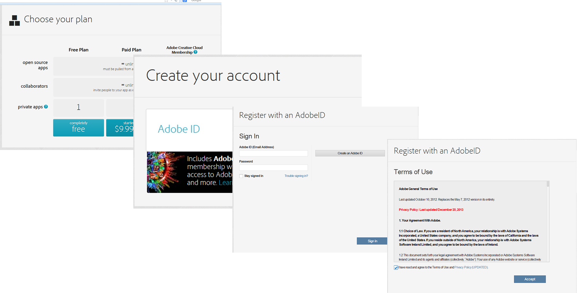
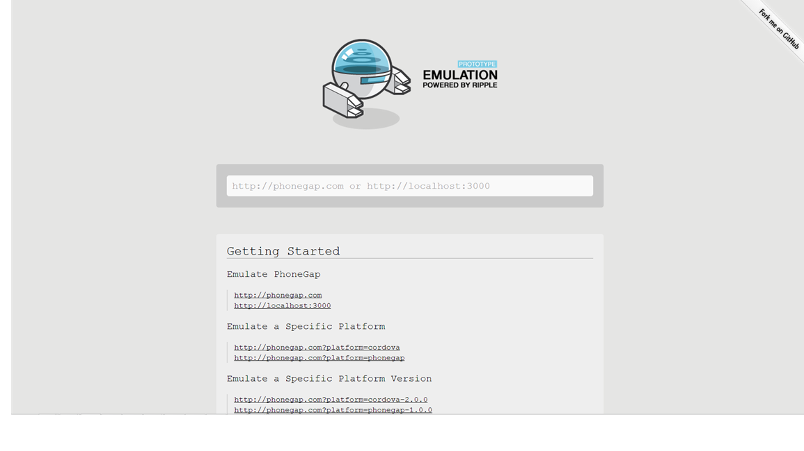
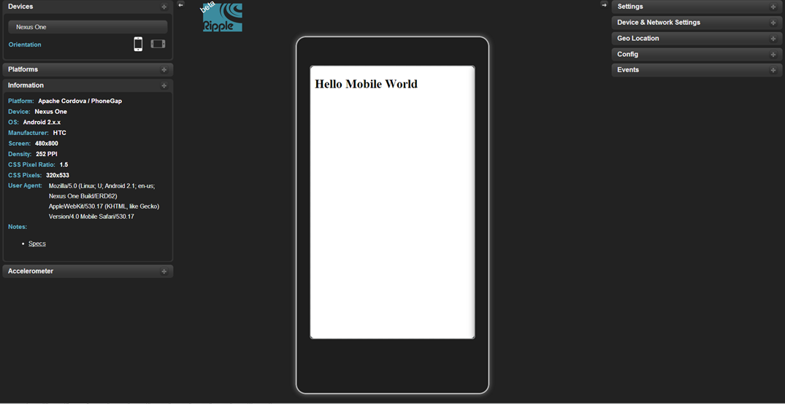
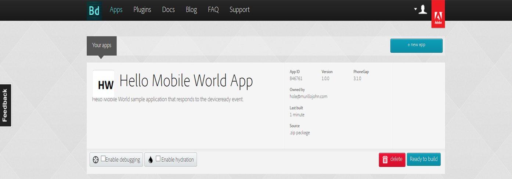

How to create an app with HTML,CSS & JS
Using PhoneGap to build mobile apps
What is PhoneGap?

Adobe PhoneGap is a standards-based, open-source development framework for building cross-platform mobile apps with HTML, CSS and JavaScript for iOS, Android™, Windows® Phone, webOS, BlackBerry® and more.
Steps to build your app
Go to build.phonegap.com & click "Get Started"
Create account
Select "Completely Free Plan", then Create an Adobe ID & enter the PhoneGap Build platform
Hello Mobile World
Make an HTML file "helloworld.html" with the following code:
Note: You can also include JS & CSS code, but for this example we only use HTML.
Web Server
To use the emulator we must host the file on a HTTP web server.
Download FileZilla from https://filezilla-project.org/. Add a new site in the site manager with the following host: ftp.dialup.mit.edu, change FTP protocol to SFTP, and enter your Athena username and password. Once you are connected, you need to upload the helloworld.html to the "www" folder inside your personal Athena directory.
PhoneGap "Ripple" Emulator
Go to emulate.phonegap.com from Chrome, install and enable the plugin & enter the URL to your hosted HTML file (i.e. "http://web.mit.edu/username/www/helloworld.html").
Testing on Emulator
Test the app with different mobile devices (For example: Nexus One or iPhone 5)
Create the app icon
For building the app an app icon is needed. The size of this icon depends on the target platform (ipad, iphone, android, blackberry, etc.)
However, for this example a generic 57x57 icon is used. Design the icon & save it as "icon.png" (you can use the one below)
The Config.xml file
To set up the app metadata create the "config.xml" file with the code above.
This file is used to specify the target platform, the phonegap version, the orientation, the link to the app icon & more.
Upload project
Compress files (config.xml, icon.png, & helloword.html) into a ZIP folder & upload it to the Build Phonegap platform.
Ready to Build
Finally, click "Ready to Build". An Android (.apk) & Windows Phone (.xap) debug app will be created automatically, for the iOS app you need to generate a Signing Key (Developer certificate & Provisioning file are required). For this example, the app is going to be tested on an Android smartphone.
Testing on Smartphone
To test Android debug app on you smartphone upload the APK file into your Athena account, go to the hosted file URL (i.e. http://web.mit.edu/username/www/helloworld.apk) from your mobile browser, & download the file.
When the download is complete, select file and choose to complete action with "Package Installer", change setting to allow installations not obtained from Google Play (Checkmark on "Unknown Sources"). Then, go back to the browser download manager, select the app, and click Install.
Note: To create an official Android app you need to generate a keystore file in Google Play